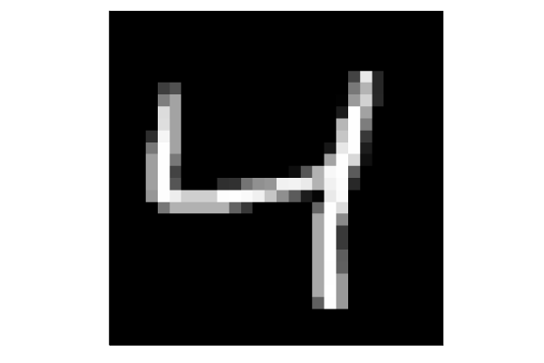

More complex networks
This section will show how to train more complex networks using the stochastic gradient descent. We will also use the more complicated MNIST dataset which contains 60000 samples of the 0-9 digits.
As always, we start with the seed
using Random
Random.seed!(666)Loading data
The convolutional layers in Flux require that the inpit has dimension $n_x\times n_y\times n_c\times n_s$, where $(n_x,n_y)$ is the number of pixels in each dimension, $n_c$ is the number of channels (1 for grayscale images and 3 for coloured images) and $n_s$ is the number of samples. The simplest way to load the dataset is to use the MLDatasets package via MLDatasets.MNIST.traindata(T), where T is a given type (can be empty).
Write a function load_data which loads the data and transforms it into a correct shape. Do not forgot to transform the labels into the one-hot representation, which can be done by using the onehotbatch function from Flux.
Solution:
First we load the packages, define the desired type to be Float32 and select the dataset the be MNIST. Working with a general dataset has the advantage that it is simple to modify the code if we want to work with a different dataset such as FashionMNIST and CIFAR.
using MLDatasets
using Flux
using Flux: onehotbatch, onecold
T = Float32
dataset = MLDatasets.MNISTSince we have never worked with MLDatasets, we do not know in which format the loading function returns the data. For this reason, we check that
typeof(dataset.traindata(T))Tuple{Array{Float32,3},Array{Int64,1}}is a tuple where its first part are the data and the second one are the labels. Performing one more check
size(dataset.traindata(T)[1])(28, 28, 60000)
shows that the channel is missing. For this reason, we need to add the channel by
function reshape_data(X::AbstractArray{T, 3}, y::AbstractVector) where T
s = size(X)
return reshape(X, s[1], s[2], 1, s[3]), reshape(y, 1, :)
endTo prevent unexpected surprises, we specify that the data have only three dimensions via X::AbstractArray{T, 3}.
Now we can write the loading function. It is similar is the one we have already written. Pay attention to the line dataset.traindata(T).... It would be possible to use two arguments dataset.traindata(T)[1] and dataset.traindata(T)[2]. However, this would load the data two times. Line y_train = T.(y_train) should not be necessary as we specify T already in traindata(T). We include the optional parameter onehot.
function load_data(dataset; onehot=false, T=Float32)
classes = 0:9
X_train, y_train = reshape_data(dataset.traindata(T)...)
X_test, y_test = reshape_data(dataset.testdata(T)...)
y_train = T.(y_train)
y_test = T.(y_test)
if onehot
y_train = onehotbatch(y_train[:], classes)
y_test = onehotbatch(y_test[:], classes)
end
return X_train, y_train, X_test, y_test
endNow we load the data by
X_train, y_train, X_test, y_test = load_data(dataset; T=T, onehot=true)The previous example is rather general. Only small modifications are needed for other datasets.
Try to load the CIFAR10 dataset (dataset = MLDatasets.CIFAR10) and fix the error in one line of code.
Solution:
We try to load the data in the same way as before
load_data(MLDatasets.CIFAR10; T=T, onehot=true)It results in an error
│ MethodError: no method matching reshape_data(::Array{Float32,4}, ::Array{Int64,1})
│ Closest candidates are:
│ reshape_data(::AbstractArray{T,3}, ::AbstractArray{T,1} where T) where TWe see that the problem is that we defined reshape_data only for input arrays of dimension 3 but since CIFAR contains coloured images, it has 4 dimensions. We therefore need to add more method for the function reshape_data
reshape_data(X::AbstractArray{T, 4}, y::AbstractVector) where T = (X, reshape(y, 1, :))Now we can load the data
typeof(load_data(MLDatasets.CIFAR10; T=T, onehot=true))Tuple{Array{Float32,4},Flux.OneHotMatrix{Array{Flux.OneHotVector,1}},Array{Float32,4},Flux.OneHotMatrix{Array{Flux.OneHotVector,1}}}We see that it returned correct tuple of four items.
Visualization of images
When working with data, it is always good to have some understanding for the dataset. Since MNIST is a dataset of images, the simplest way of understanding is plotting them.
Write a function plot_image which plots the input image. Since we work with grayscale images, the simplest way to plot is to use the plot function after converting all pixels to Gray type via a function of the same name from the Colours package.
Plot the third image from the training set and check that the label is correct. To do so, you will need our previously written onecold function or you can use the one from the Flux package.
Solution:
To plot an image, we convert it into grayscale by Gray. We not the use the dot notation since the input is a matrix and we need to apply the operator to all of its entries. Since we are not interested in axis, we turn them off by axis=nothing argument to the plot function. Note that we need to transpose the input, otherwise the image would bo rotated.
using Plots
plot_image(x::AbstractArray{T, 2}) where T = plot(Gray.(x'), axis=nothing)To make sure that plot_image works even if we call it with an input with higher number of dimensions, we write these functions.
function plot_image(x::AbstractArray{T, 4}) where T
@assert size(x,4) == 1
plot_image(x[:,:,:,1])
end
function plot_image(x::AbstractArray{T, 3}) where T
@assert size(x,3) == 1
plot_image(x[:,:,1])
endPlotting the image is then simple
i = 3
plot_image(X_train[:,:,:,i])For the correct label, we need to specify the classes 0:9. If we do not specify them, Flux will assign number 1 to 10 instead of correct 0 to 9 and the result will be larger by one
onecold(y_train[:,i], 0:9)The correct answer is
4

Training and storing the network
We write a function train_model! for training the network. Since it modifies the input model m, its name should contain the exclamation mark. Besides the data X and labels y, it also contains optional arguments optimizer opt, batch size batch_size, number of epochs n_epochs and the file name file_name to which the model should be saved.
using Base.Iterators: partition
using Flux: crossentropy
using BSON
function train_model!(m, X, y;
opt=ADAM(0.001),
batch_size=128,
n_epochs=10,
file_name="")
loss(x, y) = crossentropy(m(x), y)
batches_train = map(partition(randperm(size(y, 2)), batch_size)) do inds
return (X[:, :, :, inds], y[:, inds])
end
for _ in 1:n_epochs
Flux.train!(loss, params(m), batches_train, opt)
end
!isempty(file_name) && BSON.bson(file_name, m=m)
return
endIt starts with the loss function. On the contrary to the models used before, it uses the stochastic gradient descent instead of the (full) gradient descent. The reason is that the MNIST contains 50000 samples and the computation of the full gradient would be too costly.
To create minibatches, we create first a random partion of all indices randperm(size(y, 2)) and then use the function partition to create an iterator for which we then create the tuple of $(X,y)$ on a minibatch
batches_train = map(partition(randperm(size(y, 2)), batch_size)) do inds
return (X[:, :, :, inds], y[:, inds])
endThe equivalent formulation without the map function is the following
batches_train = [(X[:, inds], y[:, inds]) for inds in partition(randperm(size(y, 2)), batch_size)]The type of batches_train is one-dimensional array (vector) of tuples
Array{Tuple{Array{Int64,2},Array{Float64,2}},1}This allows us to call the train! function, which computes the gradients on all minibatches and performs the same number of gradient updates. Since train! looked at every sample exactly once,
Flux.train!(loss, params(m), batches_train, opt)performs one training epoch. Computationally, this is roughly equivalent to one full gradient update but this line of code performed as many gradient updates as there are minibatches. Therefore, we train for n_epoch epochs by
for _ in 1:n_epochs
Flux.train!(loss, params(m), batches_train, opt)
endAs we do need the index in the for loop, we use _. The last line saves the model whenever the file name is non-empty.
Train the model
m = Chain(
Conv((2,2), 1=>16, relu),
MaxPool((2,2)),
Conv((2,2), 16=>8, relu),
MaxPool((2,2)),
flatten,
Dense(288, size(y_train,1)), softmax)for one epoch and save it into the file MNIST_simple.bson. Print the accuracy of the model on the testing set.
Solution:
To train the model, it suffices to call the previously written function
file_name = "mnist_simple.bson"
train_model!(m, X_train, y_train; n_epochs=1, file_name=file_name)The accuracy has been computed many times during the course
using Statistics
accuracy(x, y) = mean(onecold(m(x)) .== onecold(y))
"Test accuracy = " * string(accuracy(X_test, y_test))Test accuracy = 0.9251
The accuracy is over 92%, which is not bad for training for one epoch only. Let us recall that training for one epoch means that the classifier evaluates each sample only once. To obtain a better accuracy, we need to train the model for more epochs. Since that may take some time, it is not good to train the same model again and again. The next exercise determines automatically whether the trained model already exists. If not, it trains the model. If yes, it loads it without any training. Then it loads a model which was trained externally for 50 epochs.
Write a function train_or_load!(file_name, m, X, y; ???) which checks whether the file at file_name exists.
- If it exists, it loads it and then copies its parameters into
musing the functionFlux.loadparams! - If it does not exists, it trains it using
train_model!.
In both cases, the model m should be modified inside the train_or_load! function. Pay special attention to the optional arguments ???.
Load the model at data/mnist.bson and evaluate the performance at the testing set.
Solution:
The optional argument need to contain kwargs..., which will be passed to train_model!. Besides that, we include force which enforces training the model even if the file exists (in which case, it will overwrite it).
First, we should check whether the directory exists !isdir(dirname(file_name)) and if not, we will create mkpath(dirname(file_name)). Then we check whether the file exists (or whether we want to enforce the training). If yes, we train the model, which already modifies m. If not, we BSON.load the model and copy the loaded parameters into m by Flux.loadparams!(m, params(m_loaded)). We cannot load directly into m instead of m_loaded because that would create a local copy of m and the function would not modify the external m.
function train_or_load!(file_name, m, X, y; force=false, kwargs...)
!isdir(dirname(file_name)) && mkpath(dirname(file_name))
if force || !isfile(file_name)
train_model!(m, X, y; file_name=file_name, kwargs...)
else
m_loaded = BSON.load(file_name)[:m]
Flux.loadparams!(m, params(m_loaded))
end
endFor the loading of the model, we should use joinpath to be compatible with all operating systems. The accuracy is evaluated as before.
file_name = joinpath("data", "mnist.bson")
train_or_load!(file_name, m, X_train, y_train)
"Test accuracy = " * string(accuracy(X_test, y_test))Test accuracy = 0.9815
The externall trained model has the accuracy of more 98%. Even though there are perfect models (with accuracy 100%) on MNIST, we are hapy with this results. We will perform a further analysis of the network in the exercises. We will also learn how to train the network using GPUs instead of CPUs. Even though this is extremely important to reduce time, we omit it here because some participants of the course may not have a compatible GPU for training.